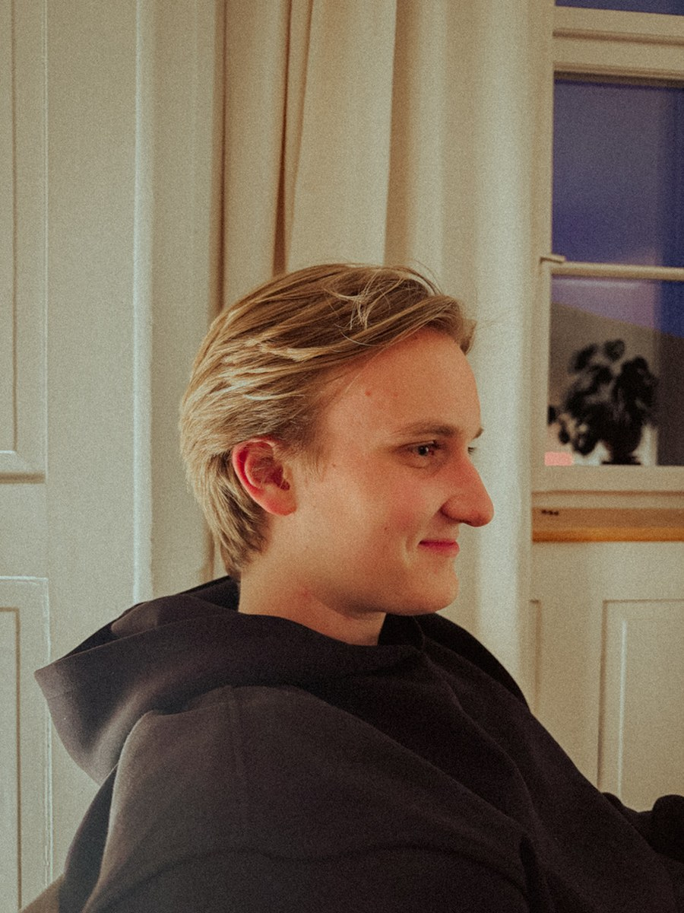

Der klassische Hochzeitsfilm zeigt die Zeremonie, die Reden und die schönsten Einstellungen des Tages. Was dabei oft fehlt, sind die Stimmen der Menschen, die den Tag zu dem gemacht haben, was er war: Freunde, Geschwister, Grosseltern, Trauzeugen.
The Guestbook setzt genau dort an. Wir interviewen eure Gäste während des Anlasses, mit einfachen, ehrlichen Fragen, und schneiden daraus einen Film voller Geschichten, Witze, Ratschläge und Botschaften ans Brautpaar.
Entstanden aus der Foto- und Videobranche in der Ostschweiz, mit dem Anspruch, etwas Neues anzubieten, das es in dieser Form in der Schweiz noch nicht gab.

The Guestbook ist die Idee von uns zwei, zwei Freunden aus der Ostschweiz. Wir waren an genug Hochzeiten dabei, um zu merken: Die schönsten Sätze des Tages fallen selten vor der Zeremonie oder auf der Tanzfläche. Sie fallen am Katzentisch, beim Anstossen mit dem Brautpaar oder auf dem Weg zur Bar, und sind am nächsten Tag meistens schon wieder vergessen.
Also haben wir angefangen, genau diese Momente festzuhalten: kurze Interviews mit den Menschen, die eine Hochzeit eigentlich ausmachen. Aus der Schnapsidee für die Hochzeit eines Freundes wurde The Guestbook, ein Studio, das mittlerweile durch die ganze Schweiz reist, weil wir überzeugt sind, dass eine gute Hochzeit vor allem aus guten Geschichten besteht.
Ein eingespieltes Zweierteam mit professioneller Kamera- und Tontechnik, das sich nie in den Vordergrund drängt.
Keine einstudierten Statements. Wir stellen einfache Fragen und lassen die Antworten natürlich entstehen.
Jeder Film wird von Hand geschnitten, mit Blick für die Momente, die in Erinnerung bleiben, statt für ein starres Schema.
The Guestbook ist in Frauenfeld zuhause und reist für Hochzeiten und Events in der ganzen Schweiz an. Die ersten 50 km ab Frauenfeld sind immer inklusive, danach verrechnen wir eine Kilometerpauschale.
Destination Weddings und mehrtägige Anlässe sind auf Anfrage ebenfalls möglich.